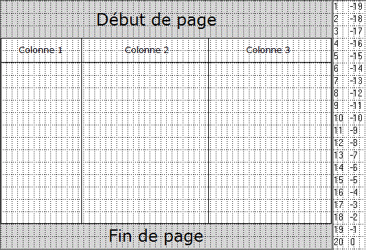
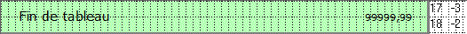
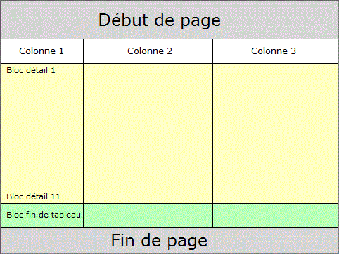
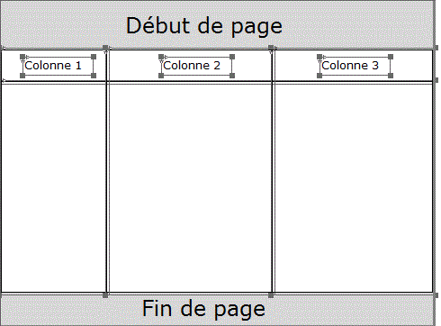
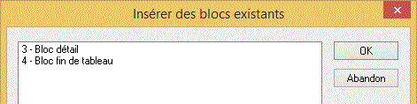
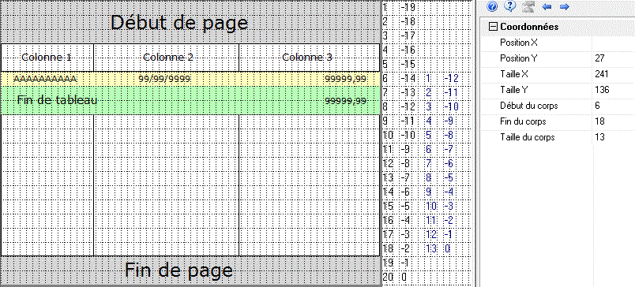
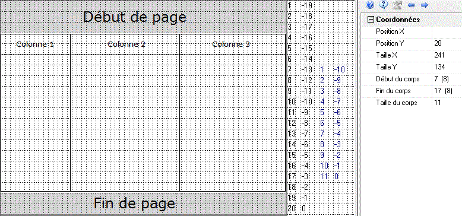
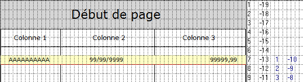

Cette rubrique montre, sur un exemple, comment faire évoluer un masque préexistant en remplaçant les "cadres" par un objet Tableau.
Remarque importante : Dans la plupart des cas, cette transformation ne nécessite sans aucune intervention sur le programme d'impression Diva.
Le masque original.
Bloc numéro 1 :



Création de l'objet Tableau.
Un objet Tableau peut être créé manuellement comme tout autre objet (choix Tableau du menu Objets ou bouton correspondant de la barre d'outils).
Le choix Transformer la sélection en tableau du menu Edition permet plus rapidement de convertir un cadre et son en-tête en objet Tableau : avant d'appeler ce choix, sélectionnez au lasso l'ensemble des objets à convertir en tableau. Dans notre exemple, les objets suivants du bloc de fond numéro 1 :

Insertion des blocs détail dans l'objet Tableau.
Il convient maintenant de spécifier que les blocs numéro 3 et 4 font partie du tableau. Pour ce faire, utilisez l'onglet vertical Tableaux et cliquez droit sur le nom du tableau dans la fenêtre Arbre des tableaux d'un bloc. Sélectionnez le choix Insérer des blocs existants ... :


Si l'objet Tableau diffère du cadre du masque d'origine.
Ce paragraphe fait référence au paragraphe intitulé Conditions préalables à une conversion correcte des bornes d'impression de la rubrique Arbre des tableaux d'un bloc. Au besoin, consultez attentivement ce paragraphe (et en particulier les problèmes potentiels liés à la règle d'alignement des blocs sur une frontière de ligne) avant de poursuivre.
Voyons maintenant sur un exemple ce qui se produit si l'objet Tableau n'est pas positionné et dimensionné exactement de la même manière que le cadre du masque d'origine. Déplaçons le tableau d'un orteil vers le bas et réduisons sa taille de deux orteils :

Dans les propriétés du tableau, on peut déjà constater que :
Le début du corps du tableau a été descendu d'une ligne (7 au lieu de 6).
Le (8) à droite du 7 signifie que 8 orteils sont "perdus" en haut après l'en-tête.
La fin du corps du tableau a été remontée d'une ligne (17 au lieu de 18).
Le (8) à droite du 17 signifie que 8 orteils sont "perdus" en bas.
Le corps du tableau a été diminué de deux lignes (11 au lieu de 13).
Pour seulement 3 orteils de différence, la place effectivement disponible pour l'impression des blocs de type Tableau est donc réduite de 2 lignes.
Cet écart est dû à la règle d'alignement des blocs sur une frontière de ligne.
Ceci souligne déjà l'importance de faire très attention à positionner et dimensionner le tableau pour qu'il coïncide avec l'existant, si l'on souhaite que la page imprimée avec le tableau contienne exactement les mêmes blocs que la page imprimée sans tableau.
Procédons maintenant à l'insertion des blocs dans le tableau :
Bloc numéro 4.
L'insertion du bloc numéro 4 est refusée et provoque l'affichage d'un message d'erreur.
En effet, ce bloc de deux lignes est actuellement imprimé de la ligne -3 (<=> ligne 17) à la ligne -2 (<=> ligne 18) dans la page.
La ligne 18, qui ne se trouve plus entièrement à l'intérieur du corps du tableau, n'est plus disponible.
La conversion placerait donc le bloc en dehors des limites du tableau (plus exactement, le bloc déborderait ici du tableau).
Bloc numéro 3.
L'insertion du bloc numéro 3 provoque l'affichage d'un message d'avertissement signalant un souci potentiel.
Normalement, ce bloc d'une ligne peut être imprimé entre la ligne 6 et la ligne -4 (<=> ligne 16) dans la page.
La ligne 6 n'étant plus disponible, les bornes d'impression seront réduites à la fourchette [7,-4], n'autorisant plus d'imprimer qu'un maximum de 10 blocs détail par page au lieu de 11.
Comme cette réduction n'est pas forcément rédhibitoire, l'insertion n'est donc pas refusée mais Xwin vous demande néanmoins de la confirmer. Après confirmation :

Maintenance d'un masque incluant un objet Tableau.
Pour terminer cette rubrique, attirons votre attention sur les conséquences possibles sur la pagination d'un simple déplacement ou redimensionnement de l'objet Tableau après l'insertion de ses blocs Tableau.
Remarque très importante :
Xwin effectue un contrôle de cohérence sur les bornes d'impression d'un bloc à l'intérieur du tableau UNIQUEMENT à l'appel de la commande d'insertion de blocs existants. Ensuite, Xwin ne procède plus à aucun contrôle.
Il faut donc rester très prudent lorsqu'on effectue une modification du dessin du tableau dans le masque (déplacement, changement de sa taille, changement de la taille de son en-tête). Comme le montre l'exemple précédent, un déplacement minime ou un léger changement de taille peut chambouler la pagination existante, notamment à cause de la règle d'alignement des blocs sur une frontière de ligne.
Attention, cette remarque ne s'applique pas uniquement à la phase de développement initial d'un masque (ou, comme ici, lors de l'évolution d'un masque préexistant vers l'objet Tableau). Elle reste valide pendant toute la durée de vie du masque.
Conseils pour simplifier la maintenance d'un tableau :
Le positionnement des blocs à l'intérieur d'un tableau est relatif au corps du tableau. Pour simplifier sa maintenance, appliquez les règles simples suivantes :
Vous souhaitez qu'une modification du tableau conserve l'agencement général des blocs imprimés à l'intérieur du tableau, et ce, sans adaptation des valeurs des Positions Début et Fin des blocs Tableau. Un agrandissement ou une diminution de la hauteur du corps du tableau modifiera simplement le nombre de blocs détail imprimés par page.
Le paramétrage des blocs Tableau doit donc être indépendant de la taille du tableau. Selon leur fonction respective, Il suffit pour cela d'exprimer les bornes d'impression relativement au début ou à la fin du tableau :
Pour un bloc toujours imprimé au début du tableau, on spécifiera des positions Début et Fin positives (relatives au début du tableau).
Pour un bloc détail imprimé tout au long du tableau, on spécifiera une position Début positive (relative au début du tableau) et une position Fin négative ou nulle (relative à la fin du tableau). Dans notre exemple, c'est le cas du bloc Tableau numéro 3 (*).
Pour un bloc toujours imprimé en fin de tableau, on spécifiera des positions Début et Fin négatives ou nulles (relatives à la fin du tableau). Dans notre exemple, c'est le cas du bloc Tableau numéro 4.
Vous souhaitez absolument qu'une modification du tableau conserve le nombre de blocs détail imprimés par page.
Pour cela, assurez-vous que la taille utile du corps du tableau reste inchangée.
(*) Dans notre exemple, que se passe-t-il si la position Fin du bloc détail numéro 3 est exprimée relativement au début du tableau et si le tableau est modifié comme indiqué au point 4 ?
Positions relatives au tableau du bloc 3 : Début = 1 ; Fin = 11 (au lieu de -2).
Après modification du tableau et sans adaptation des valeurs précédentes, ce bloc détail sera toujours imprimé entre les lignes 1 et 11 et il n'y aura plus de place disponible dans le tableau pour l'impression du bloc numéro 4.
Un bloc de fin de tableau comme le bloc 4 de notre exemple sera généralement paramétré en tant que bloc de débordement du bloc 3. Comme lui-même déborde du tableau, cela provoquera un saut de page, suivi de son impression sur la page suivante, page sur laquelle le tableau n'a pas été imprimé !
Dans ce cas, et plus généralement lorsqu'un bloc Tableau est imprimé sans impression préalable du bloc contenant le tableau, l'erreur "L'impression du bloc Tableau numéro NN doit être précédée de celle du tableau correspondant" est signalée au développeur, si le programme est lancée depuis Xwin ; en exploitation, cette erreur n'est pas explicitement signalée mais, bien entendu, l'état imprimé ne sera pas correct.